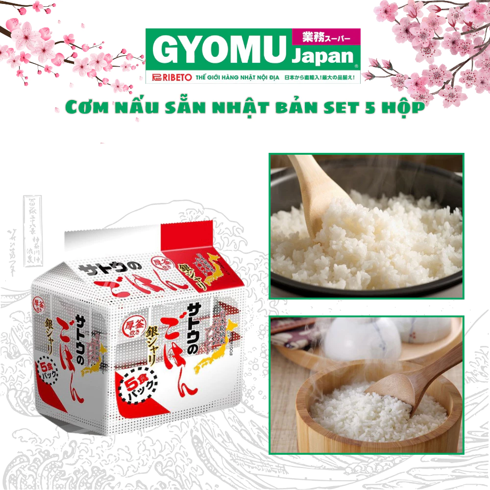

Cơm nấu sẵn , Cơm ăn liền đóng hộp Nhật Bản - Gyomu Japan
SKU: 10600130
320.000₫
Còn hàng
🚚 Miễn phí giao hàng cho đơn từ 300.000₫ – Giao trong 2 giờ
🎁 Cơm ăn liền Gyomu Japan, tiện lợi, chuẩn vị Nhật
🧴 Mô tả sản phẩm
Tên sp: Cơm nấu sẵn , Cơm ăn liền đóng hộp Nhật Bản - Gyomu Japan
Cơm Nấu Sẵn – Cơm Ăn Liền Túi 3 Phần & 5 Phần 🍚🇯🇵
Hàng nội địa Nhật Bản – Thương hiệu Gyomu
✨ Tiện lợi – Nhanh chóng – Chuẩn vị Nhật Bản ✨
📌 Mô tả sản phẩm:
- Cơm nấu sẵn Gyomu là lựa chọn hoàn hảo cho những ai bận rộn nhưng vẫn muốn thưởng thức cơm ngon như vừa mới nấu.
- Được chế biến từ gạo Japonica hảo hạng, mang đến hương vị dẻo thơm, mềm mịn đặc trưng.
- Sản phẩm có hai lựa chọn:
- ✅ Túi 3 phần – Phù hợp cho cá nhân hoặc gia đình nhỏ.
- ✅ Túi 5 phần – Tiện lợi hơn cho gia đình đông người hoặc dự trữ lâu dài.
📝 Thành phần:
- 100% gạo Japonica Nhật Bản – hạt cơm tròn dẻo, thơm ngon tự nhiên.
- Nước tinh khiết, không chứa chất bảo quản hay hương liệu nhân tạo.
✅ Đặc điểm nổi bật:
- ✔️ Tiện lợi: Chỉ cần hâm nóng là có ngay cơm ngon.
- ✔️ Chất lượng cao: Gạo tuyển chọn từ Nhật Bản, không chất bảo quản.
- ✔️ Tiết kiệm thời gian: Không cần vo gạo, nấu nướng.
- ✔️ Dễ kết hợp: Dùng kèm với các món ăn Nhật Bản hoặc Việt Nam đều phù hợp.
📦 Quy cách đóng gói:
- Túi 3 phần: Mỗi phần 200g.
- Túi 5 phần: Mỗi phần 200g.
🥢 Hướng dẫn sử dụng:
- Lò vi sóng: Hâm nóng trực tiếp trong khoảng 2 phút (mở một góc túi).
- Nước sôi: Đun nguyên túi trong nước sôi khoảng 10 phút.
- Sau khi hâm nóng, dùng ngay với các món ăn yêu thích.
❄️ Cách bảo quản:
- Bảo quản ở nhiệt độ phòng, nơi khô ráo, thoáng mát.
- Tránh ánh nắng trực tiếp và nhiệt độ cao.
- Sau khi mở túi, nếu chưa dùng hết, hãy bảo quản trong tủ lạnh và sử dụng trong vòng 24 giờ.
🔥 Cơm ăn liền Gyomu – Giải pháp nhanh chóng cho bữa ăn chuẩn vị Nhật! Đặt hàng ngay để thưởng thức! 🛒🇯🇵